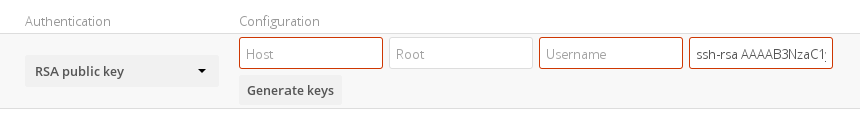
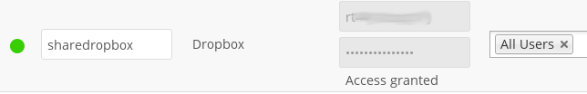

External Storage Authentication mechanisms¶
ownCloud storage backends accept one or more authentication schemes such as passwords, OAuth, or token-based, to name a few examples. Each authentication scheme may be implemented by multiple authentication mechanisms. Different mechanisms require different configuration parameters, depending on their behaviour.
Special Mechanisms¶
The None authentication mechanism requires no configuration parameters, and is used when a backend requires no authentication.
The Built-in authentication mechanism itself requires no configuration parameters, but is used as a placeholder for legacy storages that have not been migrated to the new system and do not take advantage of generic authentication mechanisms. The authentication parameters are provided directly by the backend.
Password-based Mechanisms¶
The Username and password mechanism requires a manually-defined username and password. These get passed directly to the backend.
The Log-in credentials, save in session mechanism uses the ownCloud login credentials of the user to connect to the storage. These are not stored anywhere on the server, but rather in the user session, giving increased security. The drawbacks are that sharing is disabled when this mechanism is in use, as ownCloud has no access to the storage credentials, and background file scanning does not work.
Note
There is a workaround that allows background file scanning when using Log-in credentials, save in session, and that is using Ajax cron mode. (See Background Jobs.) Be aware that the Ajax cron mode is triggered by browsing the ownCloud Web GUI.
Known Limitations¶
Please be aware that any operations must be performed by the logged-in mount owner, as credentials are not stored anywhere. As a result, there are three known limitations, for both admin and personal mounts where both have the “log-in credentials, save in session” option. These are:
- Directly sharing the storage or any of its sub-folders will go through, but the recipient will not see the share mounted. This is because the mount cannot be set up due to missing credentials. Federated sharing is also affected, because it works on a “public link share token” basis, which itself doesn’t contain the user’s storage password. As a result, the storage cannot be mounted in this case either.
- Any background task operating on the storage, such as background scanning.
- Any occ command that operates on the storage, such as
occ files:scan, will have no effect.
Note
Enterprise Users Only
The enterprise version has a mode called “Save in DB” where the credentials are saved, in encrypted form, in the database (via the WND app). In this mode, all of the above operations work.
Public-key Mechanisms¶
Currently only the RSA mechanism is implemented, where a public/private keypair is generated by ownCloud and the public half shown in the GUI. The keys are generated in the SSH format, and are currently 1024 bits in length. Keys can be regenerated with a button in the GUI.

OAuth¶
OAuth 1.0 and OAuth 2.0 are both implemented, but currently limited to the Dropbox and Google Drive backends respectively. These mechanisms require additional configuration at the service provider, where an app ID and app secret are provided and then entered into ownCloud. Then ownCloud can perform an authentication request, establishing the storage connection.

If ownCloud client’s are unable to connect to your ownCloud server, check that the bearer authorization header is not being stripped out.